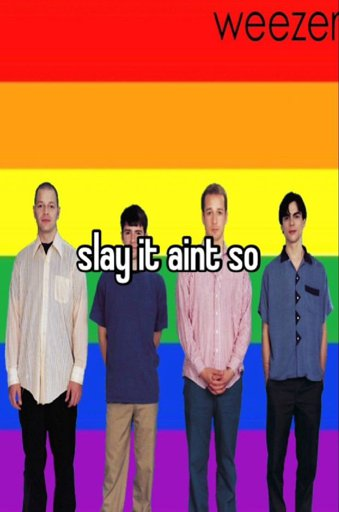

Hayden Hock
Professional Gamer - Expert cat lover
Hayden Hock has been working on this for many a hour and is the one creating this credits page, the one and two floppa gallery page, came up with the idea for floppa gallery, and recruited ephrem to join in to help make it. I also made the meme on the home page which took me ages cause I had to learn to animate and to slap more than one things into a little box without making it look like an evil conconction straight from frankenstein's basement. Also deployed the site to render. Basically I did everything and Ephrem helped with decoration.

Ephrem Jones
Professional Procrastinator, Expert Egomaniac
Slay it ain't so! It's me, Ephrem Bones! I helped with the navigation bar and animating the buttons, and also gave minimal moral support. I was not originally part of the project but am now, and gave ideas on what to do with the project. I also provided the background and helped with deploying the site. Slay it ain't so!

Franklin Josue Pineda Corado
Sarcastic Spaniard, very athletic
Franklin has done absolutely nothing for this project but give moral support so it counts. He's in the timeout corner. He's also the reason the background on this page is zoomed in so much, hence looking worse. (This was a problem till good ol' hayden went home on saturday and fixed this with like two lines of code in the style sheet.) Also we're not decorating his box out of spite because we're awful people.